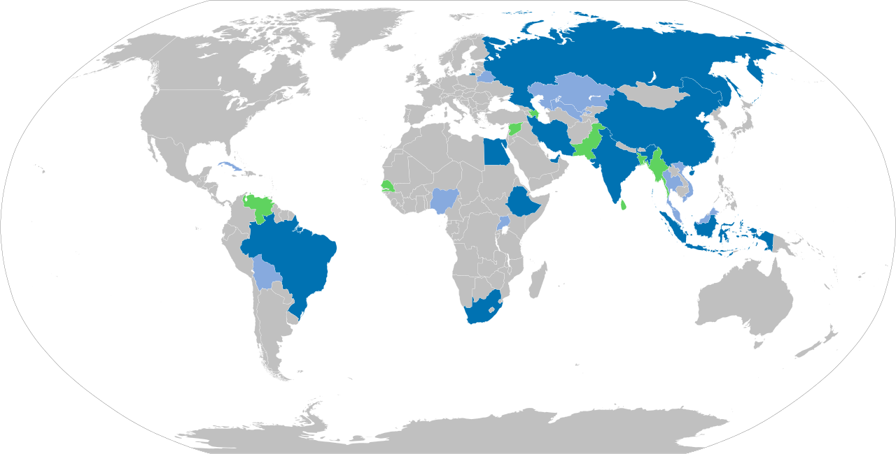

Declassified Strategic Memorandum
The Charlemagne Brief
No official directory lists an analyst named Charlemagne. Yet his briefings are said to have circulated quietly among policymakers, intelligence professionals, and congressional security circles for decades. This publication follows energy leverage, geopolitical realignment, and prophetic patterns forming beneath the headlines.
Strategic Alignment Map
BRICS+ / Energy Axis

A visual bridge connecting The Persian Prophecies with The Charlemagne Brief: energy producers, emerging blocs, and the corridors most analysts still treat as separate stories.